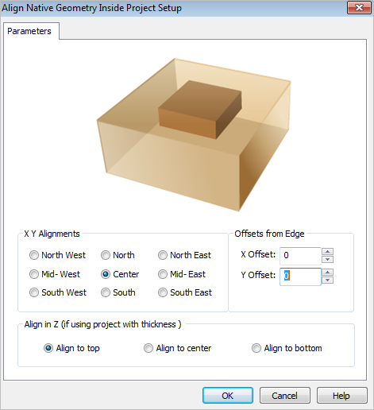
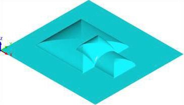
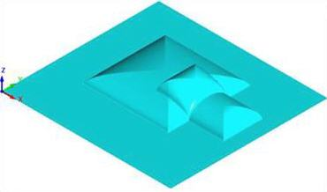

This command allows you to align native CAD geometry to the project. You can align the CAD in the X, Y or Z coordinate of the project workspace. You also has the option to offset the CAD from the edge of the project workspace.
This command allows you to align native CAD geometry to the project. You can align the CAD in the X, Y or Z coordinate of the project workspace. You also has the option to offset the CAD from the edge of the project workspace.
 Dialog Box: Align Native Geometry Inside Project Setup |
You can determine where to place the geometry in the X Y coordinates within the project workspace by selecting the desired X Y alignment coordinate radio button. In the example below, the X Y alignment that is selected is Center and notice the relief shapes are centered about the rectangular project.  |
You can enter a numerical value or use the up/down arrows to specify an offset amount for either the X or Y or both. The example below shows an offset of X .250 and Y .250 from Center of project.  |
You has the option to align the geometry within the project workspace in Z if using project with thickness. You can select the radio button for Align to top, Align to center, or Align to bottom. Align to top will move the geometry such that the top of the geometry and the top of the project workspace are flush with each other. Alight to bottom will do the same to align the bottoms of the two geometries. Align to center will position the geometry such that its middle Z value and the middle Z value of the project workspace are the same. |